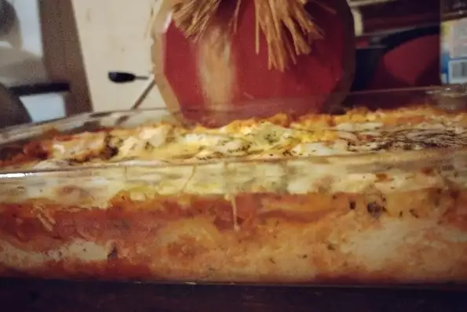

Lasagna

A delicious homemade Lasagna recipe from scratch
This recipe is a family favorite in my home. It is one of the most delectable Lasagna recipes I have ever eaten.
It is fantastic, and yes I need to drag this out to make it an actual paragraph.
Ingredients:
- 1 (16 ounce) package lasagna noodles
- 4 cups ricotta cheese
- 1/4 cup grated Parmesan Cheese
- Salt and pepper to taste
- 1 teaspoon Olive oil
- 3 cloves Garlic, minced
- 1 (32 ounce) jar spaghetti sauce
- 1 teaspoon Italian seasoning
- 2 cups shredded Mozzarella cheese
Steps:
- Preheat the oven to 350 degrees F (175 degrees C).
- Bring a large pot of lightly salted water to a boil. Add lasagna noodles and cook for
8 to 10 minutes or until al dente; drain and lay noodles flat on foil to cool.
- Mix ricotta, eggs, Parmesan Cheese, salt, and pepper together in a bowl; mix well.
- Heat oil in a medium saucepan over medium heat; add garlic and saute 2 minutes.
Stir in spaghetti sauce and Italian seasoning until warmed through, stirring occasionally, 2 to 5 minutes.
- Spread 1/2 cup of sauce on the bottom of a 9x13-inch baking dish. Cover with a layer of noodles.
Spread 1/2 of the ricotta mixture over noodles; top with another layer of noodles.
- Pour 1 1/2 cups of sauce over noodles and spread the remaining ricotta over the sauce.
Top with remaining noodles and sauce; sprinkle with remaining Mozzarella. Cover with a greased sheet of foil.
- Bake in the preheated oven until cheese is melted and bubble, about 45 minutes.